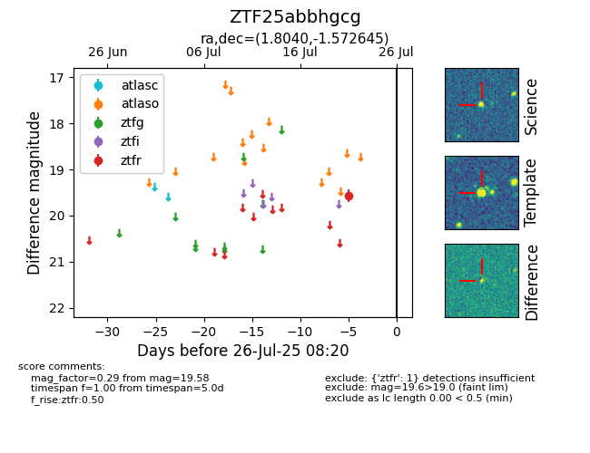

Target ZTF25abbhgcg at 2025-07-26 08:20, see:
FINK: fink-portal.org/ZTF25abbhgcg
Lasair: lasair-ztf.lsst.ac.uk/objects/ZTF25abbhgcg
ALeRCE: alerce.online/object/ZTF25abbhgcg
alt names
ZTF25abbhgcg (ztf,fink)
coordinates:
equatorial (ra, dec) = (1.8040,-1.57264)
galactic (l, b) = (98.5502,-62.33248)
photometry
last atlaso=18.63, ztfr=19.58
1 atlaso, 1 ztfr detections
